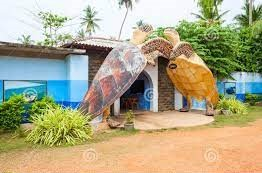
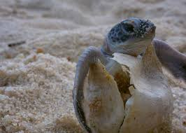
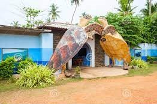
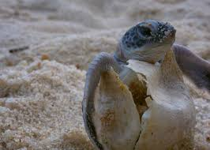

Hikkaduwa Turtle Hatchery, also known as the Hikkaduwa Sea Turtle Farm and Hatchery, is a popular conservation project located in Hikkaduwa, a coastal town in Sri Lanka. The hatchery is dedicated to the preservation and protection of sea turtles, which are an endangered species.
The primary goal of the Hikkaduwa Turtle Hatchery is to protect sea turtle eggs and ensure their successful hatching. The staff and volunteers at the hatchery collect turtle eggs from the beaches in the surrounding area, where they may be vulnerable to predation or human disturbance. The collected eggs are then incubated in a controlled environment within the hatchery to increase their chances of survival.
Once the eggs hatch, the baby turtles are kept in tanks at the hatchery for a short period to ensure they are healthy and strong before their release into the ocean. Visitors to the hatchery can observe these adorable hatchlings and sometimes even participate in the release process, which is a memorable experience.
Addition to its hatching and release activities, the Hikkaduwa Turtle Hatchery also serves as a rehabilitation center for injured or sick sea turtles. The staff provides medical treatment and care for these turtles until they are ready to be released back into the wild.
The hatchery also plays a crucial role in educating the public about the importance of sea turtle conservation. Visitors can learn about the different species of sea turtles found in Sri Lanka, their life cycles, and the threats they face in their natural habitats. The hatchery promotes responsible tourism and advocates for sustainable practices to protect the marine ecosystem.
LOCATION
Turtle Hatchery is located on the beach, roughly 2 km north of Hikkaduwa.
The best time to visit here and see the turtles is March through April.
The hatchery offers guided tours and educational programs for visitors.

 


